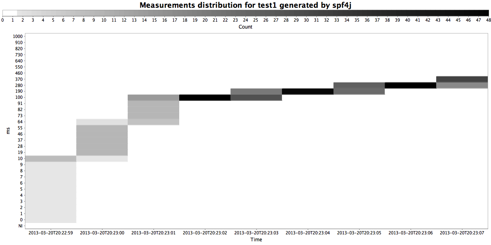

Spf4j (Simple performance framework for java)
1. Overview
The spf4j library is a collection of utilities and components to monitor, troubleshoot and fix performance issues. This library also contains useful general purpose utilities and components that are currently not available in high quality form in other OS libraries (Retry utils, object pool, test logging backend …) This library also contains ZEL, a simple expression language that can be easily used in any java application. Zel is easy to extend to your needs and also has some cool features like async functions, memorization… You can learn more by checking out the spf4j-zel module.
2. License and Contributions
This library is LGPL and Apache 2.0 licensed.
Contributions/Contributors to spf4j are welcome.
3. Code, Binaries, Build
Available on 
More info can be found on the [blog] (https://blogs.zoltran.com)


4. Performance monitoring
4.1. Why not use jamon, metrics, netflix servo ?
Observing a system changes the system. The goal of this library is to minimize the observer effect. The code in spf4j is carefully written to be as high performance as possible, it should outperform all competing libraries on any modern JVM(implementing biased locking) running on a CCNUMA system.
To achieve the lowest overhead we utilize Thread Local Counters, for a good evaluation see: Concurrent counters by numbers
4.2. How to record measurements?
4.2.1 Via API
- Low impact with log linear quantized recording for Gauge type of measurements:
private static final MeasurementRecorder recorder
= RecorderFactory.createScalableQuantizedRecorder(forWhat, unitOfMeasurement,
sampleTime, factor, lowerMagnitude, higherMagnitude, quantasPerMagnitude);
…
recorder.record(measurement);
This is ideal for recording execution times and provides the most detail. (Min, max, avg, and detailed distribution heat chart) If distribution chart is not needed createScalableMinMaxAvgRecorder is available with less overhead.
- Low impact with simple counting for Counters.
private static final MeasurementRecorder recorder
= RecorderFactory.createScalableCountingRecorder(forWhat, unitOfMeasurement, sampleTimeMillis);
…
recorder.record(measurement);
This is ideal for measurements like bytesSent, bytesReceived.
- Dynamic with log linear quantized recording for Gauge type of measurements.
private static final MeasurementRecorderSource recorderSource
= RecorderFactory.createScalableQuantizedRecorderSource( forWhatCategory, unitOfMeasurement,
sampleTime, factor, lowerMagnitude, higherMagnitude, quantasPerMagnitude);
…
recorderSource.getRecorder(forWhat).record(measurement)
As with the low impact static recorders there are dynamic equivalents: createScalableMinMaxAvgRecorderSource and createScalableCountingRecorderSource
You can also create a monitored callable and call it of pass it to a executor like :
Callable<?> monitoredCallable =
performanceMonitoredCallable(recorderSource, warnMillis, errorMillis, callable, "myCallable").call()
4.2.2 Via Annotations
Annotate a method you want to measure and monitor performance with the annotation:
@PerformanceMonitor(warnThresholdMillis=1, errorThresholdMillis=100, recorderSource = RecorderSourceInstance.Rs5m.class)
Start your jvm with Aspectj(1.7.x if you use java 1.7 or 1.8.x if you use java 1.8) load time weaver:
-javaagent:${project.build.directory}/lib/aspectjweaver-${aspectj.version}.jar
Make sure your aspectj config file (META-INF/aop.xml) contains:
<aspectj>
<aspects>
<aspect name="org.spf4j.perf.aspects.PerformanceMonitorAspect"/>
</aspects>
<weaver options="-verbose">
<!-- make sure the classes you want to apply aspects to are included -->
<include within="com..*"/>
<include within="org.spf4j.perf.aspects.PerformanceMonitorAspect"/>
</weaver>
</aspectj>
This will record the execution times of the annotated method, and will also log (via spf4j) a message containing the call detail and execution time if the warn or error thresholds are exceeded. Dynamic quantized recorder source is used.
4.2.3 Where are measurements stored?
You can configure where the measurements are stored via the “spf4j.perf.ms.config” system property like:
-Dspf4j.perf.ms.config=TSDB@/path/to/file.tsdb,TSDB_TXT@/path/to/file.tsdbtxt,GRAPHITE_UDP@1.1.1.1:8080,GRAPHITE_TCP@1.1.1.1:8080
TSDB - binary file format (this is the most efficient store)
TSDB_TXT - text format each line: groupname, timestamp millis, sampletime millis, measurementName1, measurementValue2, …
GRAPHITE_UDP - Graphite UDP appender.
GRAPHITE_TCP - Graphite UDP appender.
4.3. How to see the recorded measurements?
- Via JMX
invoke org.spf4j.perf.impl.ms.tsdb.TSDBMeasurementStore/flush to flush all measurements from memory to disk.
invoke org.spf4j.perf.impl.ms.tsdb.TSDBMeasurementStore/getTableAsCsv to get the data from a particular tsdb table as csv.
invoke org.spf4j.perf.impl.ms.tsdb.TSDBMeasurementStore/writeTableAsCsv to write the data from a particular rsdb table to a csv file.
- spf4j-UI.
The recorded measurements are saved to a TSDB file. Use the library provided UI (spf4j-ui module) to open the file and visualize the measurements.


4.4. How does it work ?
Measurements are recorded and stored in the Thread local storage. At scheduled intervals the measurements aare retrieved, aggregated and stored to a TSDB file. Charts are generated using jfreechart library. TSDB file can also be opened and measurements viewed with the library embeded UI.
[Code context] ---record(value)---> [Thread Local Storage] ----> [Aggregator/Persister] -----> [TSDB]
4.5 Export any object attribute or operations via JMX
You can annotate with @JmxExport getters and setters of a attribute or any other method that you want to make available via JMX. Here is what you need to do:
public static final class JmxTest {
private volatile String stringVal;
@JmxExport
public String getStringVal() {
return stringVal;
}
@JmxExport
public void setStringVal(final String stringVal) {
this.stringVal = stringVal;
}
private static volatile String testStr;
@JmxExport
public static String getTestStr() {
return testStr;
}
public static void setTestStr(final String testStr) {
JmxTest2.testStr = testStr;
}
}
...
// Create object
JmxTest testObj = new JmxTest();
// Expose object via JMX (JmxExport annotated methods)
Registry.export("test", "Test", testObj);
5. Performance Profiling
5.1. Why another profiling library?
It all started with Brendan Gregg’s blog: http://dtrace.org/blogs/brendan/2011/12/16/flame-graphs/ combined with a few hours of coding. However since than more monitoring capability has been added to spf4j. Flame-graph visualization has been improved to better see hot function calls… Aspects to monitor object allocation, network, file, memory, garbage collection usage have been added. One of the main advantages of spf4j is that it can be easily be used for continuous profiling. The captured profile data is persisted to ssdump files which can be opened and visualized with the spf4j UI.
Due to the use of Thread.getStackTraces() the profile data is safe point biased, which is an important aspect to consider when analyzing your profile results. For more detail on safepoint bias see:
Evaluating the accuracy of Java profilers
[Honest profiler](https://www.youtube.com/watch?v=Yg6_ulhwLw0, https://github.com/RichardWarburton/honest-profiler)
5.2. When to profile your code?
I recommend to deploy your code with profiling turned on as much as you can. In my case I have profiling data collection turned on in test/qa environments all the time. (with 100ms sampling interval). If you can afford to do it in PROD do it. Another good time to profile your code is during your JMH (http://openjdk.java.net/projects/code-tools/jmh/) benchmarks. A good practice is to have a benchmark module in your project, that will benchmark key functionality of your application. These benchmarks will be run as part of your build process, and you can monitor the performance of your project with a Jenkins JMH plugin With spf4j-junit you can also easily profile your unit tests with Spf4jRunListener.
5.3. How to profile your code?
Add spf4j to your classpath and the following to your command line:
${JAVA_HOME}/bin/java [your jvm args] org.spf4j.stackmonitor.Monitor -df [folder to write date] -dp [file prefix] -ss -si 100 -main [your app main class] -- [your app arguments]
This will start your application with profiling enabled, with a 100 ms sampling interval. After the process ends ssdump file will ge generated containing the profiling data. Profiling can also be enabled/disabled via JMX.
Supported arguments:
Usage:
-df VAL : dump folder (default: ./target)
-di N : the stack dump to file interval in milliseconds (default: 3600000)
-dp VAL : dump file prefix (default: ManagementFactory.getRuntimeMXBean().getName())
-main VAL : the main class name
-si N : the stack sampling interval in milliseconds (default: 100)
-ss : start the stack sampling thread. (can also be done manually via
jmx) (default: false)
You can also run and control the profiler via its java API:
Sampler SAMPLER = new Sampler(SAMPLE_PERIOD_MSEC);
SAMPLER.start();
SAMPLER.stop();
SampleNode collected = SAMPLER.getStackCollector().clear();
Converter.saveToFile(fileName, collected);
If you want to profile your JMH benchmarks you can simply add the spf4j JMH profiler to your startup options:
Options opt = new OptionsBuilder()
.include(".*")
.addProfiler(JmhProfiler.class)
.build();
new Runner(opt).run();
The profiling measurements will be save to file into the current dir. They can be opened and analized with the spf4j-ui.
Spf4j contains also a JMH Profiler integration for Java Flight Recorder, to use it all you need to do is:
Options opt = new OptionsBuilder()
.include(".*")
.addProfiler(JmhFlightRecorderProfiler.class)
.build();
new Runner(opt).run();
Java flight recorder should not have the safe point bias that spf4j has, however java flight recorder is a commercial feature that requires a license from Oracle for production use. For production use spf4j profiler is a zero cost alternative, which due to its simplicity should be a more reliable option as well.
THe Jmh integration is available in spf4j-jmh module:
<dependency>
<groupId>org.spf4j</groupId>
<artifactId>spf4j-jmh</artifactId>
<version>...</version>
<scope>test</scope>
</dependency>
5.4. How to see the profile data?
After the program finishes it will write the data to the {{{./stackSample.html}stackSample.html}} file
If you have a server application running and you started it with stack sampling, by default every 1 hour the collected stack data is dumped to the temp folder. You can also invoke Sampler.dumpToFile to dum the stack samples at any time in your program allowing you to separate out samples at relevant times in your application. You can load and visualize this data with the library embeded ui:

The classic flame graph visualization remains available. The explorer ui can be used to visualize the measurements stored in the tsdb files. You can also export the measurements to csv format allowing you to analyze them with tools like excel.
in the UI you can filter certain stack traces by right clicking on them and using the filter option in the context menu.
5.5. How does it work?
A sampling thread is started and running in the background. This thread uses Thread.getAllStackTraces() or the JVM MX beans (configurable) to get all stack traces for all threads. Each sample is added to a tree that aggregates the stack trace data.
5.6. Monitoring memory allocations:
You will need to apply aspect org.spf4j.memorymonitor.AllocationMonitorAspect to the code you want to monitor object allocations. This aspect will intercept all new objects calls in your code and it will use performance monitoring described at chapter 4 to record the number and amount of allocations. AspectJ load time weaving is not capable of intercepting allocations done inside rt.jar. You will have to apply your aspect against rt.jar and create a new one and add it to the boot class path in case you want to see all allocations.
Getting access to the data is same as described in chapter 4, you can do it over jmx, or opening the tsdb file in the embeded ui:

Allocations are classified based on the class where they are done. This allows you to quickly identify memory hogs. In the chart above you can see how memory allocations happened, both byteSize and allocation count and what class. Object size computation might be too much overhead, in that case you can disable it by system property setting:
-Dperf.allocations.recordSize=false
5.7. Monitoring Network IO
The aspect org.spf4j.iomonitor.NetworkMonitorAspect will allow you to monitor you processes network traffic.
 network traffic
network traffic
5.8. Monitoring Memory Usage
By calling MemoryUsageSampler.startMemoryUsageSampling(sampleTime) memory usage will be sampled at the provided interval. Sampled data ill be aggregated at the interval set by perf.memory.sampleAggMillis system property. Data will be stored into a spf4j tsdb where data can be accessed via jmx or the sf4j ui.
5.9. Monitoring File Usage
By calling OpenFilesSampler.startFileUsageSampling(sampleTime, warnThreshold, errorThreshold), file usage will be sampled at the provided interval. This is usefull to see open files trend and detect file handle leaks, which will cause in general outages of your application. The warn and error threshold numbers will long details provided by lsof to help you troubleshoot what is going on. Sampled data will be aggregated at the interval set by perf.io.openFiles.sampleAggMillis system property. Data will be stored into a spf4j tsdb where data can be accessed via jmx or the sf4j ui.
6. High Performance Object Pool
6.1. Why another object pool implementation?
In my(I am not alone) view current available object pool implementations are less than perfect. Beside the scalability issues and bugs, I don’t like the following implementation choices found in other implementations:
-
- Test on borrow is pointless, there is no guarantee that you will get a valid object even if you test on borrow. This encourages the developer to disregard handling of this case when it receives an invalid object. This practice also often is a performance killer.
-
- Indiscriminate test on return is not optimal either. Test on return should be done only in the case where there is a suspicion that the object is invalid, otherwise the performance impact will be too high to be acceptable in most cases. Pool client should be able to provide feedback on return for that case.
-
- NO exception swallowing. If a exception happens with the pooled objects the pool user will know about it and will have to handle it.
One of the most popular object pool implementations is apache commons-pool with dbcp-pool specialized in JDBC object based on it. A lot of people are unhappy with this implementation (including myself), so much that the apache tomcat developers wrote their own implementation. Here is a comparison of their implementation against dbcp pool:
http://tomcat.apache.org/tomcat-7.0-doc/jdbc-pool.html
A performance comparison between dbcp, c3p0, and tomcat jdbc pool :
http://www.tomcatexpert.com/blog/2010/03/22/understanding-jdbc-pool-performance-improvements
The goal of this implementation is to be more reliable and faster than any of the implementations out there.
6.2. Use case
The classical use case for an object pool is to pool your jdbc connections or any type of network connection.
6.3. How to use the object pool
Creating a pool is simple:
RecyclingSupplier<ExpensiveTestObject> pool = new RecyclingSupplierBuilder(10, new ExpensiveTestObjectFactory()).build();
at minimum you will need to provide the maximum size and the object factory. To do something with a object from a pool you will need to:
Template.doOnSupplied(new Handler<PooledObject, SomeException>() {
@Override
public void handle( PooledObject object, long deadline) throws SomeException {
object.doStuff();
}
}, pool, imediateRetries, maxBackoffDelay, timeout );
You can also use the get and recycle methods on the object pool to get and return an object to the pool.
6.4. How does the pool work?
The architecture above biases object to threads, so a thread will most likely get the same object minimizing object contention (if pool size >= thread nr which is the recommended sizing).
[code context] <----> [Thread Local Pool] <----> [Global Pool]
On the other hand this pool implementation will prefer to create a new connection instead of reusing a connection that has already has been used by another thread. This is alleviated by the maintenance process which can bring back unused local object to the global pool.
7 The Execution Context.
When building systems often the need arises to have parameters that address system wide concerns passed across function invocation transparently. (ThreadLocals) Some examples in practice are JDBC transaction contexts(Spring) tracing information (Opentrace/Jaeger/…). In spf4j the main use case for something like this arised for the propagation of deadlines, which are fundamental when coding distributed systems.
as such the ExecutionContext can be easilly created like:
try (ExecutionContext ctx = ExecutionContexts.start("operation_name", timeout, timeUnit)) {
....
}
the execution context can be retrieved with:
ExecutionContext ctx = ExecutionContexts.current();
Execution contexts are transfered across Thread boundaries with: ContextPropagatingExecutorService (can wrap any executorservice) or you can create context transfering Callables and Runnables with ExecutorContexts utility methods.
Execution contexts implementations are cutomizable with the system property: spf4j.execContentFactoryClass where you can specify your custom ExecutionContextFactory implementation.
8. Retry/failure handling utilities.
Although there are other libraries that provide this functionality, I haven’t found any that can do:
- 1) No Exception lost + ability to propagate checked exceptions (Sync mode only).
- 2) Retry operation can be different from original operation. (redirect, fallback, etc…)
- 3) The retry operation can be executed with delay which can be a function of the response or exception.
- 4) Timeouts are core functionality. (Support)
- 5) sync and async retry capabilities.
- 6) ability to propagate checked exceptions.
Here is example:
RetryPolicy.<Response, ServerCall>newBuilder()
.withDeadlineSupplier((c) -> c.getDeadlineNanos())
.withDefaultThrowableRetryPredicate() // use known transient exceptions.
.withResultPartialPredicate((resp, sc) -> {
switch (resp.getType()) {
case CLIENT_ERROR:
return RetryDecision.abort();
case REDIRECT:
return RetryDecision.retry(0, new ServerCall(sc.getServer(),
new Request((String) resp.getPayload(), sc.getRequest().getDeadlineMSEpoch())));
case RETRY_LATER:
return RetryDecision.retry(
TimeUnit.NANOSECONDS.convert((Long) resp.getPayload() - System.currentTimeMillis(),
TimeUnit.MILLISECONDS), sc);
case TRANSIENT_ERROR:
return RetryDecision.retryDefault(sc);
case ERROR:
return null;
case OK:
return RetryDecision.abort();
default:
throw new IllegalStateException("Unsupported " + resp.getType());
}
}).withResultPartialPredicate((resp, sc)
-> (resp.getType() == Response.Type.ERROR)
? RetryDecision.retryDefault(sc)
: RetryDecision.abort(), 3)
.withExecutorService(es)
.build().call(serverCall, IOException.class);
9. Other utilities
Lifo Threadpool: org.spf4j.concurrent.LifoThreadPoolBuilder
Retry utility implementation: see org.spf4j.base.Callables and org.spf4j.concurrent.RetryExecutor
Union: see org.spf4j.base.Either
Unique ID and Scalable sequence generators: org.spf4j.concurrent.UIDgenerator and org.spf4j.concurrent.ScalableSequence
Csv: org.spf4j.io.Csv
IPC: org.spf4j.concurrent.FileBasedLock
Data Structures: org.spf4j.ds.RTree; org.spf4j.ds.Graph; org.spf4j.ds.UpdateablePriorityQueue
Process control: org.spf4j.base.Runtime
Object recyclers: org.spf4j.recyclable.impl.*
Concurrency: org.spf4j.io.PipedOutputStream
String performance utilities: org.spf4j.base.Strings
NIO TCP proxy server: org.spf4j.io.tcp.proxy.*
Distributed semaphore: org.spf4j.concurrent.jdbc.JdbcSemaphore